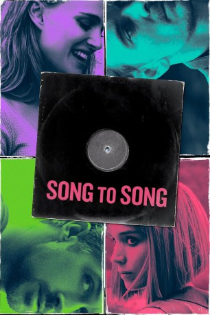
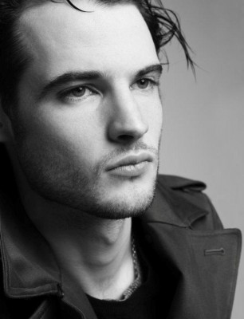

#7500 Song to Song
 
 IMDB-Wertung: 5.7 / 10
IMDB-Wertung: 5.7 / 10  Tomatometer: 43
Tomatometer: 43  Metascore: 54
Metascore: 54 
Auf einer Party des einflussreichen Produzenten und Musikmoguls Cook lernen sich die hoffnungsvollen aufstrebenden Musiker Faye und BV kennen. Faye hat in der Hoffnung auf bessere Karriereaussichten vor einiger Zeit eine Affäre mit Cook begonnen und BV ist Cooks neueste Entdeckung, doch die beiden beginnen trotzdem eine Beziehung - allerdings ohne, dass BV von Faye und Cook weiß. Doch die Dreiecksbeziehung ist nicht von langer Dauer, denn Cook lernt nur wenig später die Kellnerin Rhond kennen und verführt sie. Als BV dann aber eines Tages von Fayes Vergangenheit mit Cook erfährt, trennen sie sich. Doch in der lebendigen Musikszene von Austin finden die beiden schnell wieder eine neue Liebe: BV lernt die ebenfalls frisch getrennte Amanda kennen, während Faye eine Beziehung mit der Französin Zoey beginnt.
Jahr: 2017
Dauer: 129 Minuten
FSK: 6
Land: USA Studio: Broad Green PicturesTonspuren: DTS - ,
Untertitel: Deutsch,
Auflösung: 1080p (1920x808) Größe: 11366 MB
Genre: Drama, Musik, Liebe
Regisseur: Terrence Malick
Drehbuch: Terrence Malick
Soundtrack:
Darsteller:
 Ryan Gosling als BV
Ryan Gosling als BV Rooney Mara als Faye
Rooney Mara als Faye Michael Fassbender als Cook
Michael Fassbender als Cook Natalie Portman als Rhonda
Natalie Portman als Rhonda Cate Blanchett als Amanda
Cate Blanchett als Amanda Holly Hunter als Miranda
Holly Hunter als Miranda Bérénice Marlohe als Zoey
Bérénice Marlohe als Zoey Val Kilmer als Duane
Val Kilmer als Duane- Lykke Li als Lykke
- Olivia Grace Applegate als Emma
 Linda Emond als BV's Mother Judy
Linda Emond als BV's Mother Judy- Louanne Stephens als Mrs. Gansmer
- Christin Sawyer Davis als Angry Woman
-  Tom Sturridge als BV's Brother
 Brady Coleman als Faye's Father
Brady Coleman als Faye's Father- Austin Amelio als BV's Brother
 Iggy Pop als Iggy Pop
Iggy Pop als Iggy Pop- Patti Smith als Patti Smith
- John Lydon als John Lydon
- Florence Welch als Florence Welch
- Anthony Kiedis als Anthony Keidis
 Flea als Flea
Flea als Flea- Chad Smith als Chad Smith
- Big Freedia als Big Freedia
- Nina Varano als Pool Girl #2
- Gabriella Rhodeen als Groupie Girl
 Angela Bettis als Angela , uncredited
Angela Bettis als Angela , uncredited Sergine Dumais als Amanda , uncredited
Sergine Dumais als Amanda , uncredited Jaime Gallagher als Jogger , uncredited
Jaime Gallagher als Jogger , uncredited- June Griffin Garcia als Restaurant Patron , uncredited
- Beau Harris als Club Patron , uncredited
- David Shea Henne als House Party Guest , uncredited
- Chase Joliet als Chase , uncredited
 Heather Kafka als Suzie , uncredited
Heather Kafka als Suzie , uncredited- Oryan Landa als Party Guest , uncredited
- Stephen Latham als House Party Guest , uncredited
- Tom Macdonald als Satan , uncredited
- Natalie Makenna als Ashes Girl , uncredited
- Steven Mitchell als Party Member , uncredited
- Savanah Montalvo als Trick or Treater Secretary , uncredited
- Anthony Montanino als Waiter #1 , uncredited
- Camille Natta als Faye , uncredited
- Jeremy O. Harris als Partier , uncredited
 Trevante Rhodes als TR , uncredited
Trevante Rhodes als TR , uncredited- Peggy Schott als Gansmer Guest , uncredited
- Johnny Walter als Handsome Man , uncredited
- Savannah Welch als Savannah , uncredited
- Dana Falconberry als Faye's Sister
- Jaylyn Jones als Escort
- Jessa Peters als Hotel Girl #1
Datei: X:\2017(N-Z)\Song to Song (2017, FSK6, 1920x808).mkv seit 15.11.2017
Festplatte: HD 2017(A-Z)-2018(A-F)
 Es gibt insgesamt 170 Filme in der Gruppe '2017(N-Z)'
Es gibt insgesamt 170 Filme in der Gruppe '2017(N-Z)'